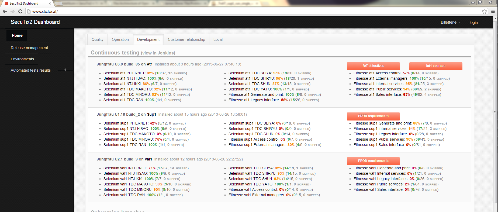

Selenium
Selenium
A library that allows user emulation in the browser.
“How would a user do this action?”
What's nice
- Acts as a real end user
- Nice clean API
- Many language bindings
What's not nice
- Not reliable
- Slow
- Very very slow
- Hard to debug
Think twice before using it
Relevant if the page you are testing uses javascript and dynamic content.
There are more efficient ways to test a service or a process. Prefer fitness that is way faster, and easier to debug
Webdriver
Both the code controlling the browser, and the interface that binds to it
Find an element in the DOM
WebDriver driver = new FirefoxDriver();
// And now use this to visit Google
driver.get("http://www.google.com");
// Find the text input element by its name
WebElement input = driver.findElement(By.name("q"));
Interact with webElements
// Enter something to search for
input.sendKeys("cheese");
// Now click the search button
WebElement button = driver.findElement(By.id("gbqfb"));
button.click();
Wait until
final FluentWait<WebDriver> wait = new FluentWait<WebDriver>(driver);
wait.until(new Predicate<WebDriver>() {
@Override
public boolean apply(final WebDriver driver) {
return driver.getCurrentUrl().contains("cheese");
}
});
//Now you can verify the result page
assertThat(...)
Testing process @STX
- Application builds #n
- Env is updated and starts with some reference data
- Tests run
- Analyze and fix
- Ouputs a quality measure of the build #n
- Build #n may be pushed further in process
Dashboard
Jenkins

You
- Great tool, use it
- Get involved
Further reading
- wiki http://wiki.elca.ch/twiki/secutix/bin/view/SecuTix2/SeleNium
- API https://code.google.com/p/selenium/
- at disposal
- architecture http://www.aosabook.org/en/selenium.html
Next
Visit https://github.com/secutix
Hands on in brownbag-java/Selenium/brownbag-selenium